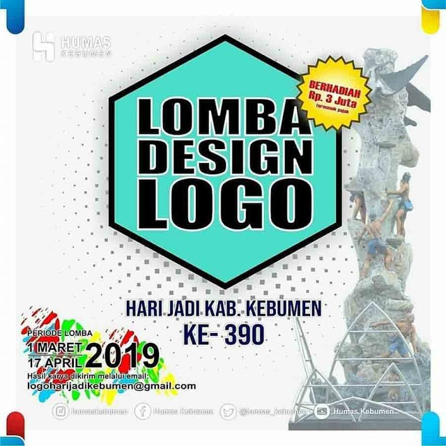

Lomba Desain Logo Hari Jadi ke-390 Kab. Kebumen 2019 Umum Gratis
Lomba Desain Logo Hari Jadi ke-390 Kab. Kebumen 2019 adalah sebuah lomba desain logo terbaru gratis untuk semua masyarakat umum dimanapun berada yang dimana diselenggarakan oleh Humas Kebumen. Adapun informasi lomba terbaru desain logo hari jadi kabupaten kebumen ini bertemakan
"Hari Jadi Kab. Kebumen ke-390"
Yuk kalian yang mau ikutan bisa langsung membuat karya desain terbaik kalian namun dengan ketentuan yang telah ditetapkan ya. Semua ketentuannya bisa dilihat dibawah, dicatat juga untuk timeline deadline hanya sampai dengan 17 April 2019. Sebaiknya kalian harus segera membuatnya karena kurang dari seminggu dari tanggal sekarang pendaftaran dan pengumpulan karya akan ditutup. Simak informasi lengkapnya dibawah ini.

Syarat dan Ketentuan Lomba Desain Logo Hari Jadi ke-390 Kab. Kebumen 2019
1. Terbuka untuk umum.
2. Perorangan/Perusahaan.
3. Masing-masing peserta max mengumpulkan 2 Design Logo.
4. Melampirkan Surat Pernyataan Bermeterai belum pernah dipublikasikan & dilombakan.
5. Melampirkan deskripsi logo.
6. Menyertakan Data Diri lengkap.
7. Logo pemenang menjadi milik panitia.
Kriteria Lomba Desain Logo Hari Jadi ke-390 Kab. Kebumen 2019
1. Karya asli/bukan plagiat.
2. Belum pernah dipakai/dipublikasikan.
3. Merepresentasikan potensi/karakter/sejarah/budaya lokal Kebumen.
4. Mencerminkan semangat pembangunan kabupaten.
5. Logo bertuliskan 390 dan disertai dengan slogan yang sesuai dengan kriteria No. 3 dan 4.
6. Sederhana dan mudah diingat.
7. Tidak mengandung unsur SARA.
8. Logo dapat diaplikasikan di seluruh media.
Kirim karya terbaikmu lewat email logoharijadikebumen@gmail.com
Upload di instagram kamu, tag serta mention @humaskebumen. Jangan lupa follow instagram @humaskebumen untuk info terbaru.
Timeline Lomba Desain Logo Hari Jadi ke-390 Kab. Kebumen 2019
- Pendaftaran dan pengumpulan: 01 Maret - 17 April 2019
- Pengumuman: belum di informasikan dan akan di umumkan melalui instagram @humaskebumen
Hadiah Lomba Desain Logo Hari Jadi ke-390 Kab. Kebumen 2019
Kalian bisa memperebutkan hadiah sebesar Rp. 3.000.000,- yang dimana sudah termasuk pajak didalamnya ya.
Ayoo, buruan... sambil ngopi, bikin karya yang bermanfaat buat Kebumen tercinta. Selamat berkarya ya, sukses selalu.
Sekian informasi diatas yang bisa admin sampaikan kepada kalian, apabila masih ada pertanyaan bisa langsung kalian DM instagram humas kebumen yang sudah mimin infokan diatas ya. Goodluck para pejuang lomba, sukses selalu dan semoga berhasil membawa pulang hadiahnya.